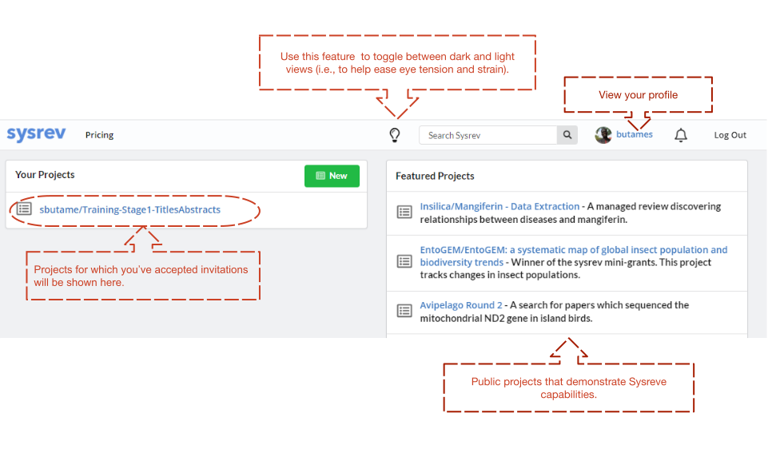

A Guide to Screening Citations and Documents
Introduction
We are conducting a systematic review of the literature on pharmacist-led comprehensive medication management (CMM) interventions in populations living with hypertension. After searching several databases, we have compiled a list of citations or references that could theoretically be included in our analysis. We need to screen these citations to ensure that they have a basic level information, before we go through the challenge of extracting data for analysis. This guide will provide some of the basic information to carry out this screening process. Furthermore, it will provide information on using the SysRev Platform, a web-based tool to help us work together to mine data from our corpus of citations/references and eventually the full-text.
Supporting Documents

Systematic Review Protocol - This document represents the protocol for our systematic review. It details our study objectives, methods, and rationale for our approach.
Inclusion Criteria - While working to screen a corpus it can be handy to have a list of inclusion criteria to work with. This document is meant to assist with the process.
Screening Cheat Sheet - This is an accompanying document that hopefully answers some of the more subtle questions you may have during screening. The training presentation and the protocol document also capture much of this information.
The SysRev Platform

The SysRev Platform (developed by Insillica, LLC.). The platform allows our team to work collaboratively (with the assistance of natural language processing and machine learning) to extract data and information for our systematic review. To begin using SysRev, you will need to create an account (if you have already created one, please skip to step 2).
SysRev Signup - https://sysrev.com/register
- Click on the Sign up for SysRev button (alternatively copy and paste the above link into your browser).
- Use a preferred email address and password (There is an option to sign up with a Google.com (i.e., Gmail) account if that works better for you in terms of keeping track of username and password information).
- Once you sign-up you will have to verify your email address to ensure that your account is activated (SysRev is free to use, so no worries about making any payments).
Launching a Project
You are able to start your own projects within the Platform. However, to get started with this project, I have to invite you to projects that I have created. Take the following steps to ensure you are invited to the correct projects so we may proceed.
Once you complete your sign-up, inform me and I can invite you to the projects. That process won’t take long. You will get an email from me (Email: sbutame@ph.lacounty.gov) with a link to a SysRev project.
That project will be titled — Training-Stage1-TitlesAbstract (Or something similar). This guide contains images that are meant to serve as a guide to what you will interract with as you use the SysRev Platorm. There may be some variation in the names of the spefic projects that you encounter, and as we move forward with screening and eventually data extraction.
When you receive the email from me, sign-in to your SysRev account, and then click on the link (within the email). If you have any trouble with this portion, please let me know.
SysRev Layout
Once you’ve accepted the project invitation, you will see all the projects you have accepted listed to the left of the landing page, under Your Projects.

To begin, select the relevant project. On clicking the specific project, you will have access to a similar project menu shown below. This menu gives you access to five items:
Overview Page – A project summary, summary statistics and summary information on the project.
Articles Page – A listing of the data (or articles/citations) that have been uploaded to the project.
Data Page – A summary page on the project data.
Users Page – Information about project collaborators and colleagues.
Analytics Page – Indepth statistics on the project and progress of collaborators (only accessible by the administrator).
Review Page – Information on what remains to be done for the project (A blank page means nothing left to do).
Overview Page
The Overview page gives a short explanation of the project, research question and the criteria we are using for screening or extracting data.
This page also displays a series of boxes, to provide summary on the data you and your collaborators will extract from citations/references.
- The Review Status box will show how far along you have come in terms of citations or articles reviewed, whether you chose to include or exclude them etc.
- The Project Document box contains PDF copies of the study protocol and a separate list of the Inclusion/Exclusion criteria. Review these to help with your work.
- The Prediction Histogram box will present information on your progress. As I mentioned earlier, the SysRev Platform employs machine learning and natural language processing in the background as you work attempting to predict your coding patterns and that of the project team.
- Finally, the Important Terms box, also employs the machine learning functions to provide some summary information on the citations and references we are screening.
Once you begin screening citations, this page may look someting similar to the below, populated with data interpreted by the platform.
Articles Page
The Articles page provides a list of the citations/references uploaded into the project. There are several ways to load the citation corpus into SysRev. At present you don’t need to worry about this process. When you are ready to begin screeing, you will find all the necessary data listed in this section.
Data Page
The Data page will provide a summary of those citations/references and the changes you and your fellow reviewers have made to each in terms of coding (I will explain further). As you can see from the image below it is similar to the Articles Page but is optimized for manipulating labels and exporting data. Only the project administrators have access to the data here.
Analytics Page
The Analytics page is closed off to you. Just note that it provides based on your coding and screen activity (It is not pertinent to our screening activity). As with the data page, only the project administrators have access to the data here.
Review Page
As you are working through screening or reviewing the citations in the corpus, the Review page will indicate how many citations (manuscripts) are left to you.
Additional Information
If you want some additional information on the SysRev Platform for your own work, Insillica LLC, owners of SysRev provide some instructional videos.
Title and Abstract Screening
The objective at this point is to give a first pass of all the references we have gathered to ensure that they have a basic level of information necessary for the systematic review. This systematic review has two important steps before we begin extracting data. The first is Title and Abstract Screening.The objective is to efficiently scan the titles and the abstracts (if available) of the citations and to mark them as Include or Exclude based on the criteria detailed in the protocol.
We have already had an introduction to S
Getting Started
- Log-in to your account
- You will see projects listed in your profile by name (if I have invited you to a project).
- Click on the project (e.g., Stage1-TitlesAbstracts) to access the landing page described above.
- To begin, click on Review.
On the left, you will see a listing of labels, and on the right you will see the citations including: Title, Journal, Publication year, Authors, and Abstract (if available).
Full-text Screening
Getting Started